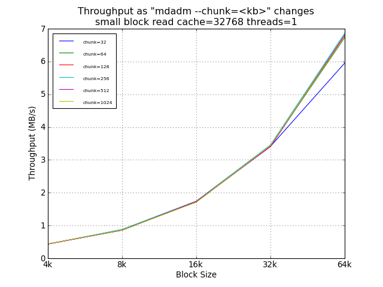
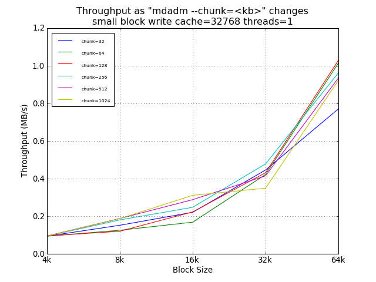
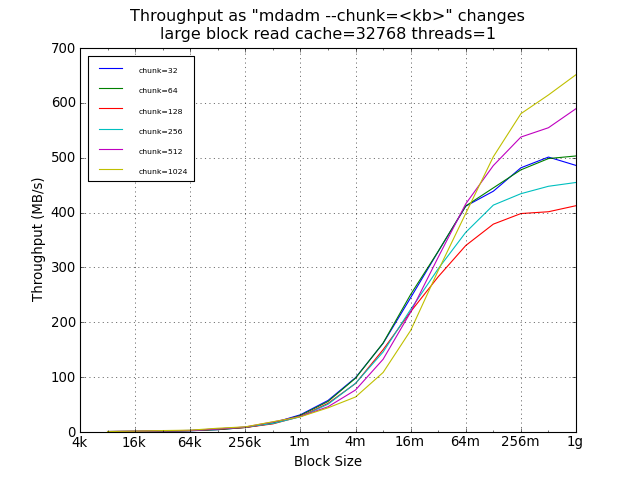
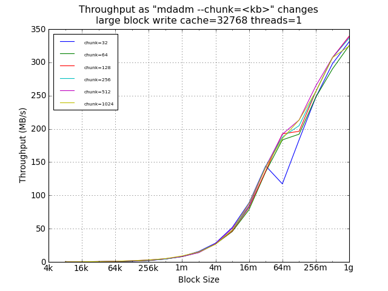

A Comparison of Chunk Size for Software RAID-5
Linux Software RAID Performance Comparisons (2012)
The Problem
Many claims are made about the chunk size parameter for mdadm
(--chunk). One might think that this is the minimum I/O size across
which parity can be computed. There is poor documentation
indicating if a chunk is per drive or per stripe. This study
determines that.
The Controller
- LSI SAS9211-8i (SAS2008)
- 8 6Gbph ports
- PCIe 2.0
- Chipset: Fusion-MPT
- Linux driver: mpt2sas
- Cost: about $230 from amazon.com
- Configuration: JBOD
The Test System
- Motherboard: Supermicro MBD-H8DCL-IF-O
- Processors: Two 3.3GHz Opteron 4238 (Socket C32)
- RAM: 64GB 1600MHz DDR3 (PC3-12800)
- Slots: PCIe x8 (4000MB/s)
- Drives: Seagate Barracuda 7200 3000Gbytes ST3000DM001
- Drive cage: Supermicro CSE-M35T-1B 5-Bay Enclosure (fits in
three 5-inch chassis bays; sells for about $100-$120 from
newegg.com)
- Debian Wheezy, Linux 3.2.0-3-amd64
The Test Matrix
- Read Percentage: 100% (pure read), 0% (pure write)
- Random Percentage: 100% (random)
- Thread counts: 1
- Small block sizes: 4k, 8k, 16k, 32k, 64k, 128k, 256k, 512k,
1m, 2m, 4m
- Large block sizes: 4k, 8k, 16k, 32k, 64k, 128k, 256k, 512k,
1m, 2m, 4m, 8m, 16m, 32m, 64m, 128m, 256m, 512m, 1024m
- Targets: All 5 driver were tested simultaneously, as well as
each drive individually.
- All small block I/Os are issued using the O_DIRECT flag.
- All large block I/Os use a sequence of 8KB blocks, followed
by an fsync, followed by a seek to the next "large block". This
simulates random I/O at small block sizes and sequential I/O at
large block sizes. By not using O_DIRECT and calling fsync
instead, the Linux block system is tested, which simulated
real-world NFS performance.
- All tests last 30 seconds.
Conclusion
The default chunk size of 64KB provides resonable average
performance. Sizes below the default should not be used.
Surprisingly, chunk sizes of 128KB and 256KB provide decreased
maximum throughput for both small block and large block reads,
especially for sequential reads.
Compared with the legacy default of 64KB, 1024KB chunks provides a
30% improvement in large sequential reads (1GB) and an 85%
improvement in 16KB random writes. The current default is 512KB,
which provide benefits of a larger chunk size.
Recommendation: 512 (default)
Small Block Tests


Large Block Tests

